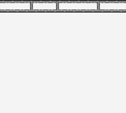

Isolierte Designvorschau · Welt 1 · Version 2
Abenteuerwald — Rahmen & HUD-Elemente
Der Wald-HUD-Rahmen und der Zwischensequenz-Rahmen sind mit den bereits ausgearbeiteten Anzeigen kombiniert.


RahmenquellenWald-HUD-Rahmen · Zwischensequenz-Rahmen